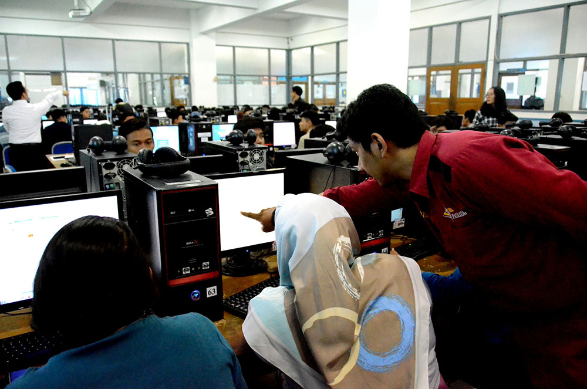

Matrikulasi merupakan sebuah program penyetaraan atau pengenalan kampus yang dikhususkan untuk calon mahasiswa Udinus. Peserta matrikulasi adalah mereka yang mendaftar pada gelombang 1 C. Matrikulasi bersifat wajib diikuti oleh calon mahasiswa baru. Pada matrikulasi saya mendapatkan mata kuliah Pengantar Teknologi Informasi (PTI) dan Dasar Komputasi (Daskom).
Setiap program studi akan menyesuaikan mata kuliah PTI sesuai kebutuhan. Di Fakultas Ilmu Komputer (Fasilkom) saya belajar mengenai teknologi informasi dan komunikasi, teknologi manajemen informasi dan lain sebagainya. Pengajar disini cukup ramah, interaktif dan mengajar dengan baik. Pada mata kuliah dasar komputasi saya mendapat banyak pengetahuan dan tentunya meningkatkan ketrampilan saya pada praktek penggunaan aplikasi office dan pembuatan web.
